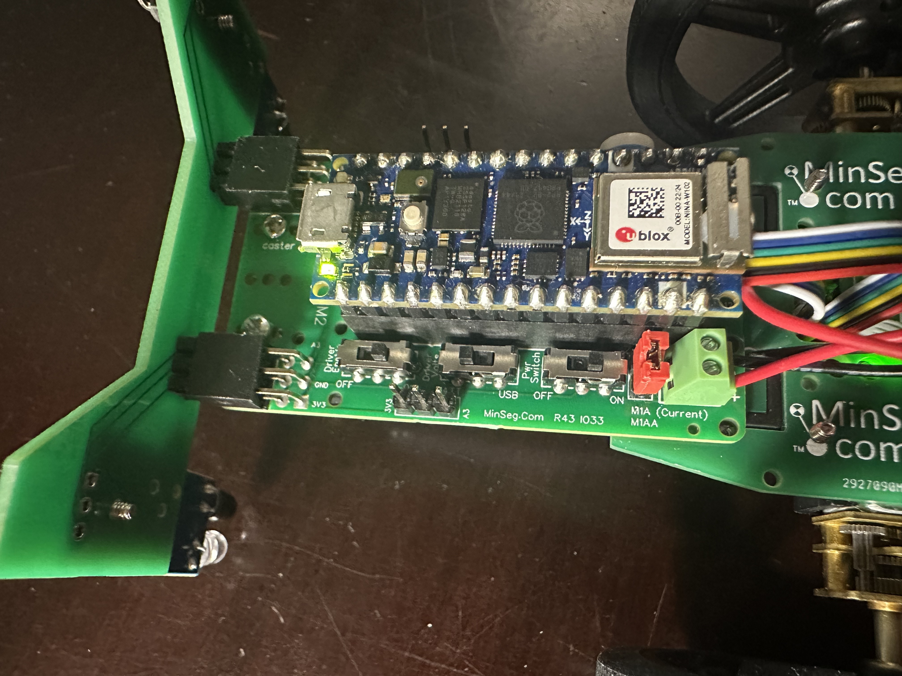

Quick Start
Assembly

The kit has 5 main parts: the IR sensor bar, Arduino Nano RP2040, wheels, battery (not shown) and MinSeg board. To assemble, insert the battery into the MinSeg kit. This could be a tight fit, so be careful! Line up the terminals of the battery first (they should connect together well), then rock the battery into place.
Next, insert the Arduino on the top of the MinSeg kit. Each pin on the Arduino has a corresponding connector on the MinSeg kit, so make sure they align. The Arduino should be oriented as shown, with the microUSB connector facing forwards on the kit.

Next, slide the IR sensor bar into the front of the MinSeg board, with the IR sensors facing downwards. The orientation is important so that you do not reverse polarity and burn out the LEDs!
{kind=link}
After that, slide the wheels onto the motor shafts. Be gentle! The wheels and motor shafts have a flat side (D shafts), so make sure the flats align before trying to slide them on! If you have trouble, try facing the outwards bump of the wheels into the kit as shown below:

After that, the kit is assembled. Let’s adjust the settings. On the left side of the MinSeg board, you’ll find three switches, labeled “Pwr Switch”, “Driver Volts”, and “Driver Enable”. When you flip the Power Switch on, you should see lights on the Arduino, MinSeg board, and IR sensors light up. If any of these lights do not light up, something is wrong with your assembly. Make sure you have done the previous steps correctly, including inserting a battery.
Flipping the Driver Enable switch will allow the Arduino to drive the motors. Switch it to ON.
Lastly, flip “Driver Volts” to Battery Power. This will draw power from the battery rather than your laptop (which will be disconnected when you run your final code).
With this assembly and settings, you’ll be ready to go!
Installation
You will need to download OpenMV IDE to transfer your MicroPython code onto the arduino. See Workflow Using OpenMV for more information about this process.
Your Arduino Nano RP2040 can run either C++ or MicroPython, but not both at the same time. So before moving on, it is important that the Arduino is configured for MicroPython mode. This guide from Arduino will walk you through the process of “bootloading” the Nano RP2040 so that you can run MicroPython code on it. After you have done this once, you should not need to do it again.
To use the NanoNav supplementary code, either download nanonav.py to your project directory
Or copy the code below into a file called nanonav.py
1from ble_advertising import advertising_payload
2import bluetooth
3from machine import Pin, PWM, ADC, freq
4import machine
5from micropython import const
6import rp2
7
8import time
9
10# Define BLE constants (these are not packaged in bluetooth for space efficiency)
11_IO_CAPABILITY_DISPLAY_ONLY = const(0)
12_FLAG_READ = const(0x0002)
13_FLAG_WRITE = const(0x0008)
14_IRQ_CENTRAL_CONNECT = const(1)
15_IRQ_CENTRAL_DISCONNECT = const(2)
16_IRQ_GATTS_WRITE = const(3)
17
18class BLE:
19 def __init__(self, ble=bluetooth.BLE(), name="NANO RP2040"):
20 # Setup bluetooth low energy communication service
21 _SERVICE_UUID = bluetooth.UUID(0x1523) # unique service id for the communication
22 _NanoNav_CHAR_UUID = (bluetooth.UUID(0x1525), _FLAG_WRITE | _FLAG_READ) # characteristic
23 _NanoNav_SERVICE = (_SERVICE_UUID, (_NanoNav_CHAR_UUID,),) # service to provide the characteristic
24
25 self._ble = ble
26 self._ble.active(True)
27 self._ble.config(
28 bond=True,
29 mitm=True,
30 le_secure=True,
31 io=_IO_CAPABILITY_DISPLAY_ONLY
32 )
33 self._ble.irq(self._irq)
34 ((self._handle,),) = self._ble.gatts_register_services((_NanoNav_SERVICE,))
35 self._connections = set()
36 self._payload = advertising_payload(name=name, services=[_SERVICE_UUID])
37 self._advertise()
38 self.value = b'a'
39
40 def _advertise(self, interval_us=500000):
41 self._ble.gap_advertise(interval_us, adv_data=self._payload)
42
43 def _irq(self, event, data):
44 # handle bluetooth event
45 if event == _IRQ_CENTRAL_CONNECT:
46 # handle succesfull connection
47 conn_handle, addr_type, addr = data
48 self._connections.add(conn_handle)
49
50 self.on_connected()
51
52 elif event == _IRQ_CENTRAL_DISCONNECT:
53 # handle disconnect
54 conn_handle, _, _ = data
55 self._connections.remove(conn_handle)
56 self._advertise()
57
58 self.on_disconnected()
59
60 elif event == _IRQ_GATTS_WRITE:
61 conn_handle, value_handle = data
62 if conn_handle in self._connections:
63 # Value has been written to the characteristic
64 self.value = self._ble.gatts_read(value_handle)
65
66 def on_connected(self):
67 pass
68
69 def on_disconnected(self):
70 pass
71
72 def send(self, value):
73 if not isinstance(value, bytes):
74 if isinstance(value, int):
75 value = value.to_bytes(1, "big")
76 elif isinstance(value, str):
77 value = value.encode('utf-8')
78 else:
79 raise ValueError("send value should be type int, bytes, or string")
80 self.value = value
81 self._ble.gatts_write(self._handle, value)
82
83 def read(self):
84 #use the last value written to characteristic
85 value = self.value
86 try:
87 return int.from_bytes(value, "big")
88 except Exception as e:
89 return None
90
91class NanoBot:
92 def __init__(self, saturated_duty=22000, *args, **kwargs):
93 # turn ir sensor pin on (inactive because it's active low)
94 self.ir_right_sensor = Pin(28, Pin.OUT)
95 self.ir_right_sensor.on()
96
97 time.sleep(0.5)
98
99 # ir sensors
100 self.ir_left_sensor = ADC(Pin(29, Pin.IN))
101 self.ir_right_sensor = ADC(Pin(28, Pin.IN))
102
103 # initialize frequency
104 machine.freq(100000000)
105
106 # initialize motors
107 m1pin1 = Pin(21)
108 m1pin2 = Pin(4)
109 m2pin1 = Pin(18)
110 m2pin2 = Pin(17)
111
112 self.m1pwm1 = PWM(m1pin1)
113 self.m1pwm2 = PWM(m1pin2)
114 self.m2pwm1 = PWM(m2pin1)
115 self.m2pwm2 = PWM(m2pin2)
116
117 # initialize motor constants
118 self.max_duty = 65535 # constant
119 self.saturated_duty = saturated_duty # choice for max speed
120 assert(0 <= self.saturated_duty <= self.max_duty)
121 self.turn90ticks = 120
122 self.turn_error = 5
123 self.block_delay = 1550
124
125 # PID controller constants
126 self.battery_scaling = 1.05
127 self.kp = 0.8 * self.battery_scaling
128 self.ki = 0.08 * self.battery_scaling
129 self.kd = 0.04 * self.battery_scaling
130
131 # initialize encoder variables
132 self.encpins = (15, 25, 7, 27)
133 self.enc1p1 = Pin(self.encpins[0], Pin.IN)
134 self.enc1p2 = Pin(self.encpins[1], Pin.IN)
135 self.enc2p1 = Pin(self.encpins[2], Pin.IN)
136 self.enc2p2 = Pin(self.encpins[3], Pin.IN)
137
138 self.enc1 = 0
139 self.enc2 = 0
140 self.enc1dir = 1
141 self.enc2dir = 1
142
143 # add interrupt callbacks to track encoder ticks
144 self.enc1p1.irq(lambda pin: self.enc_pin_high(self.encpins[0]), Pin.IRQ_RISING)
145 self.enc1p2.irq(lambda pin: self.enc_pin_high(self.encpins[1]), Pin.IRQ_RISING)
146 self.enc2p1.irq(lambda pin: self.enc_pin_high(self.encpins[2]), Pin.IRQ_RISING)
147 self.enc2p2.irq(lambda pin: self.enc_pin_high(self.encpins[3]), Pin.IRQ_RISING)
148
149 self.setup()
150
151 def enc_pin_high(self, pin):
152 if pin == self.encpins[0] or pin == self.encpins[1]:
153 if self.enc1p1.value() == 1 and self.enc1p2.value() == 1:
154 self.enc1 += 1 * self.enc1dir
155 elif self.enc1p1.value() == 1:
156 self.enc1dir = 1
157 else:
158 self.enc1dir = -1
159 if pin == self.encpins[2] or pin == self.encpins[3]:
160 if self.enc2p1.value() == 1 and self.enc2p2.value() == 1:
161 self.enc2 += 1 * self.enc2dir
162 elif self.enc2p1.value() == 1:
163 self.enc2dir = -1
164 else:
165 self.enc2dir = 1
166
167 def calc_duty(self, duty_100):
168 return int(duty_100 * self.max_duty / 100)
169
170 def m1_forward(self, duty_cycle):
171 self.m1pwm1.duty_u16(min(self.calc_duty(duty_cycle), self.saturated_duty))
172 self.m1pwm2.duty_u16(0)
173
174 def m2_backward(self, duty_cycle):
175 self.m1pwm1.duty_u16(0)
176 self.m1pwm2.duty_u16(min(self.calc_duty(duty_cycle), self.saturated_duty))
177
178 def m1_signed(self, duty_cycle):
179 if duty_cycle >= 0:
180 self.m1_forward(duty_cycle)
181 else:
182 self.m2_backward(-duty_cycle)
183
184 def m2_forward(self, duty_cycle):
185 self.m2pwm1.duty_u16(min(self.calc_duty(duty_cycle), self.saturated_duty))
186 self.m2pwm2.duty_u16(0)
187
188 def m2_backward(self, duty_cycle):
189 self.m2pwm1.duty_u16(0)
190 self.m2pwm2.duty_u16(min(self.calc_duty(duty_cycle), self.saturated_duty))
191
192 def m2_signed(self, duty_cycle):
193 if duty_cycle >= 0:
194 self.m2_forward(duty_cycle)
195 else:
196 self.m2_backward(-duty_cycle)
197
198 def stop(self):
199 # set all duty cycles to 0
200 self.m1pwm1.duty_u16(0)
201 self.m1pwm2.duty_u16(0)
202 self.m2pwm1.duty_u16(0)
203 self.m2pwm2.duty_u16(0)
204
205 def setup(self):
206 # initialize frequencies
207 self.m1pwm1.freq(1000)
208 self.m1pwm2.freq(1000)
209 self.m2pwm1.freq(1000)
210 self.m2pwm2.freq(1000)
211
212 def ir_left(self):
213 return self.ir_left_sensor.read_u16() < 65535 // 2
214
215 def ir_right(self):
216 return self.ir_right_sensor.read_u16() < 65535 // 2
217
218 def get_enc1(self):
219 return self.enc1
220
221 def get_enc2(self):
222 return self.enc2
223
224 def set_enc1(self, value):
225 self.enc1 = value
226
227 def set_enc2(self, value):
228 self.enc2 = value
Workflow Using OpenMV
Here is how you can program your Arduino. You will need a file called main.py that contains your MicroPython code - you can create other files
and import them as usual, but main.py is the one that will be run on the Arduino. We’ll explain a bit more about MicroPython below. For getting started quickly, we recommend downloading this installation check
main.py to verify that everything is working correctly so far. Alternatively, copy the following into a file called main.py:
1from nanonav import BLE, NanoBot
2import time
3
4### test Bluetooth ###
5
6# Create a Bluetooth object
7ble = BLE(name="NanoNav")
8
9ble.send(43)
10response = ble.read()
11# wait until something changes, indicating a response
12while response == 43:
13 response = ble.read()
14 time.sleep(0.5)
15
16print("Received: ", response)
17
18### test motors and encoders ###
19
20# Create a NanoBot object
21robot = NanoBot()
22
23# Move forward for 2 seconds
24print(f'encoder 1 start: {robot.get_enc1()}')
25robot.m1_forward(30)
26robot.m2_forward(30)
27time.sleep(2)
28print(f'encoder 1 end: {robot.get_enc1()}')
29
30# Stop
31robot.stop()
32robot.sleep(2)
33
34# Move backward for 2 seconds
35print(f'encoder 2 start: {robot.get_enc2()}')
36robot.m1_backward(30)
37robot.m2_backward(30)
38time.sleep(2)
39print(f'encoder 2 end: {robot.get_enc2()}')
40
41# Stop
42robot.stop()
43
44### test ir sensors ###
45while True:
46 print(f'left: {robot.ir_left()} right: {robot.ir_right()}')
47 time.sleep(0.5)
We recommend creating a folder that you will use for your MicroPython code - put both nanonav.py and main.py in that folder. Open the OpenMV IDE application. Use the File -> Open Files menu to select the main.py file that you downloaded.
Connecting to the Arduino over USB
Connect your Arduino to your computer using a USB cable. In the bottom left of the OpenMV IDE, you should see this:
{kind=link}
If you don’t see this, it means that OpenMV doesn’t recognize the board. You can wait for a little and try messing with your USB conection (different cable, different port, unplug/replug, etc.). Once you see this, click the “Connect” button (the USB connection, or upper button of the two in the image).
The arrow below it should turn green when connected.
{kind=link}
After you can see the green arrow, you should be able to see the Arduino as an external drive in FileExplorer (Windows), Finder (Mac), or the equivalent for your Operating System. It will likely be named “NO NAME” and should contain a main.py and README.txt file. Copy the nanonav.py file over to the Arduino (external drive) by either Ctrl-C Ctrl-V or drag-and-drop. This will enable you to import nanonav when you run your code on the board.
Running your code on the Arduino
Laptop mode: Click the arrow to run the code in conjunction with the laptop. Running in laptop mode is optimal for debugging. You can run and stop your code without touching the Arduino or USB cable. While in laptop mode, you can use print statements to print to the Serial Terminal in the OpenMV IDE. You can expand this terminal by pressing its corresponding button in the bottom left of the IDE. Note that when running in laptop mode, you must have the Arduino connected to the laptop. Once you disconnect the Arduino, your code will no longer be running.
Solo mode: To run code without the laptop connected, you need to run in solo mode. Connect to the Arduino but don’t hit the green play. Instead, go to Tools > Save open script to OpenMV Cam (as main.py). This will write the file you have open to the Arduino under the name “main.py”. An alternative way to do this would be to copy the file over in FileExplorer/Finder like we did for nanonav.py. If you copy the file using FileExplorer/Finder, make sure it’s named main.py, as the Arduino looks for and executes only the main.py file. In solo mode, you won’t have access to any print statements or Python exceptions, so only use solo mode after you’ve tested your code in laptop mode.
We recognize that OpenMV IDE is not a very nice editor to write code in, so feel free to open main.py in your favorite editor (such as VS Code) for editing and run it from OpenMV IDE.
MicroPython
In general, MicroPython is very similar to regular Python, but there are some difference we would like to point you to before you begin. MicroPython has its own library of
packages, which are different from the PyPi packages you may be used to (if you ever pip install anything). We provide helper functions for the ways we think you’ll need to
interact with the Arduino, Bluetooth, and peripherals, and just about anything you can do in Python 3.11 can also be done in MicroPython, but note that you will not have access to the full standard Python library. For instance, you can import time since this has been added to
MicroPython’s library, but you cannot import Queue or other familiar packages. If ever in doubt about whether MicroPython supports a particular package, simply google “MicroPython [package name]”,
and you will likely find the information you need.
You can find the MicroPython documentation here.
Next Steps
Now that you have your Arduino set up and running MicroPython, you can start writing your own code. Feel free to take a look at and modify the main.py we provided earlier to see a few ways of interacting with the Arduino using the nanonav library. When you are ready to learn more, take a look at our guides to using Bluetooth, controlling Movement, and reading Sensors.